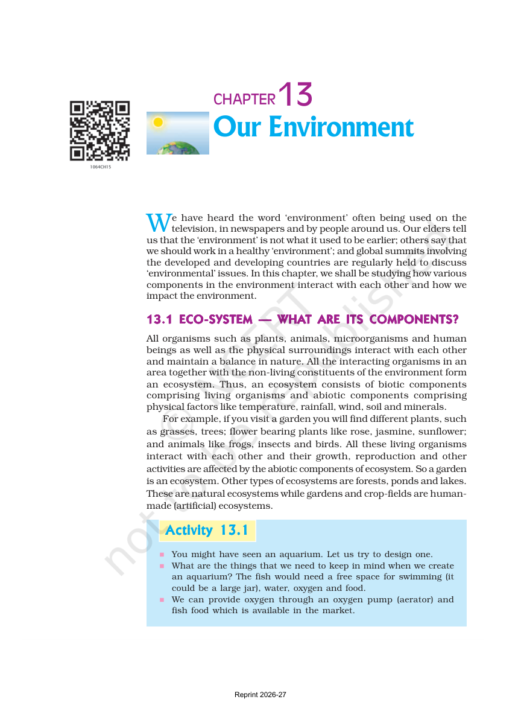
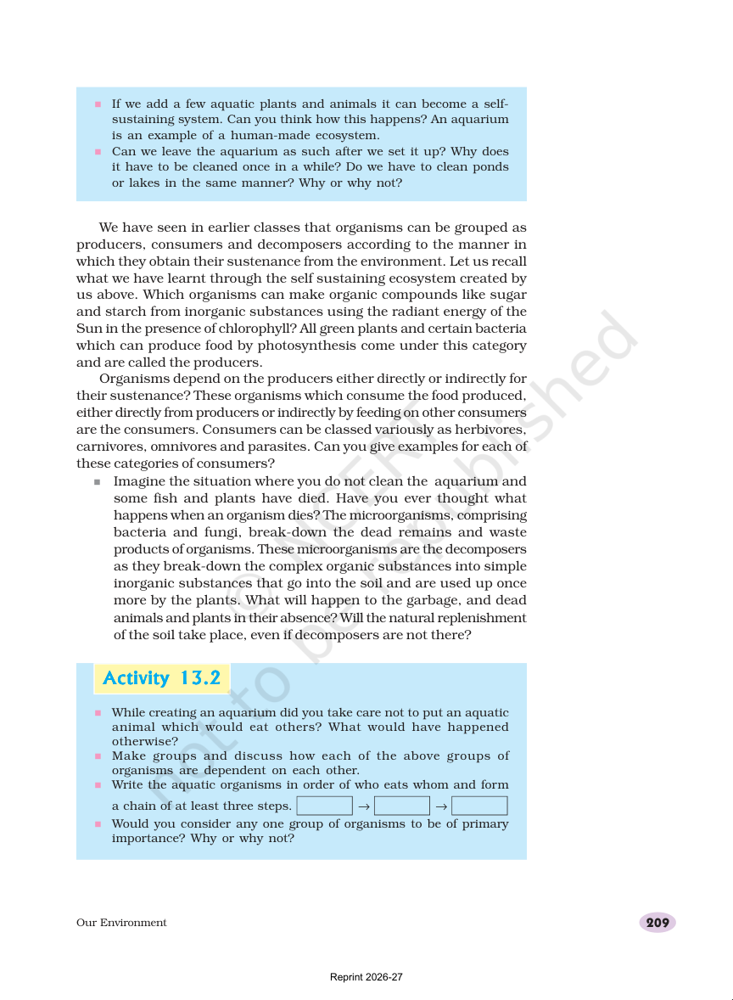
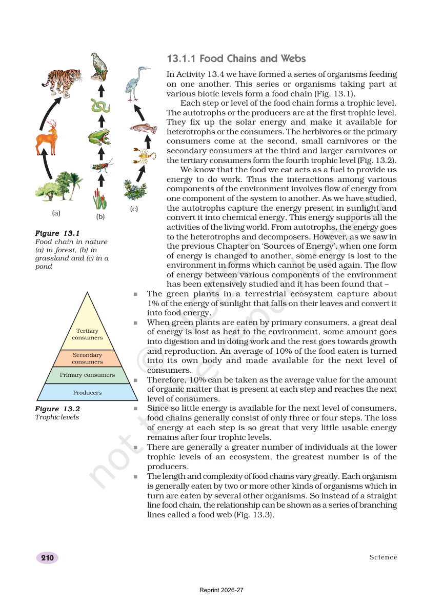
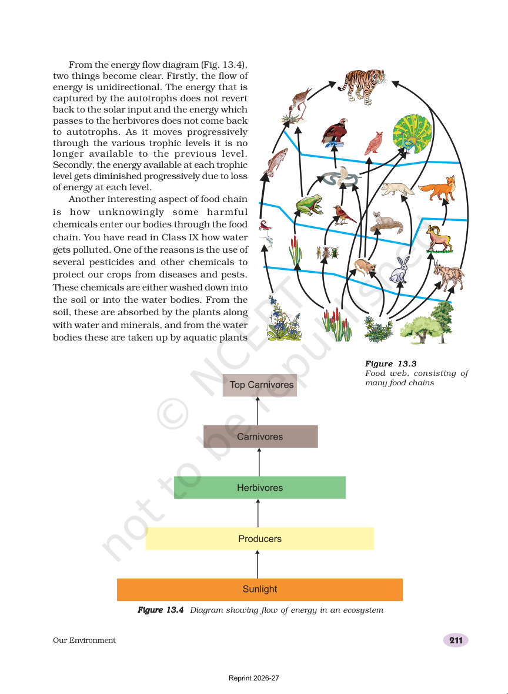
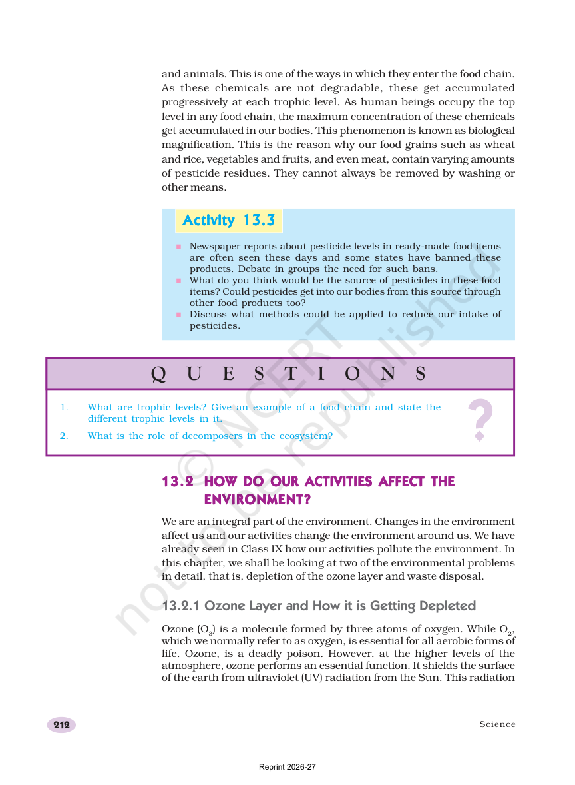
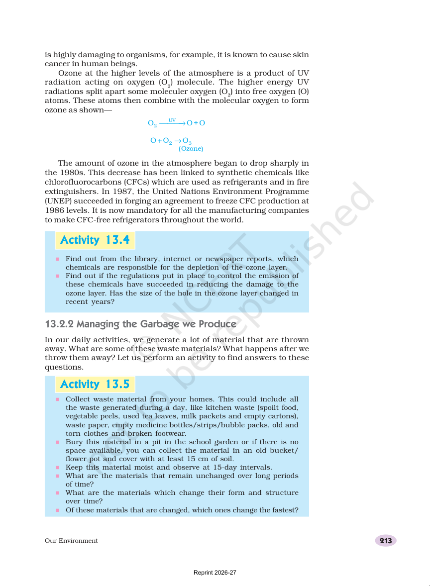
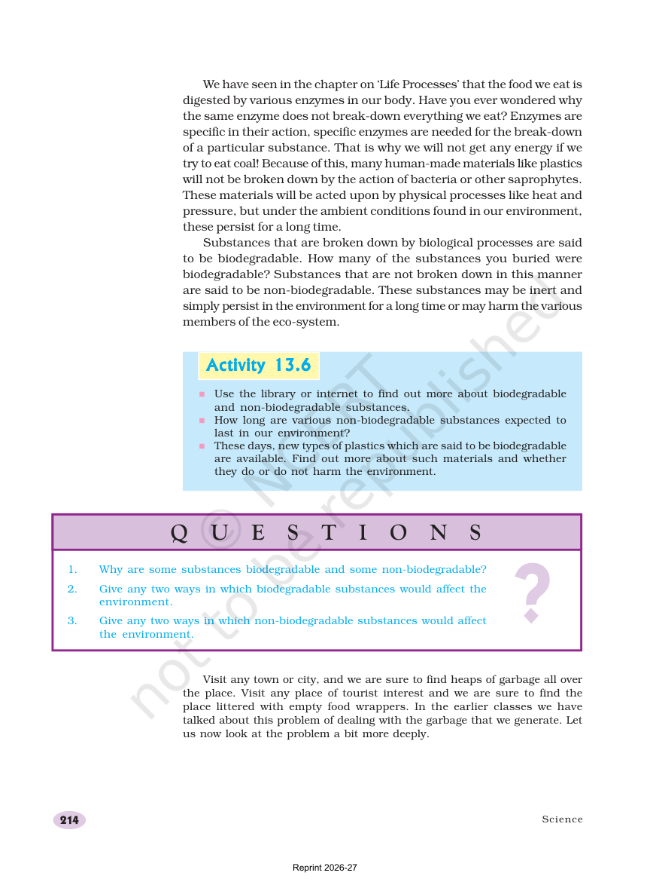
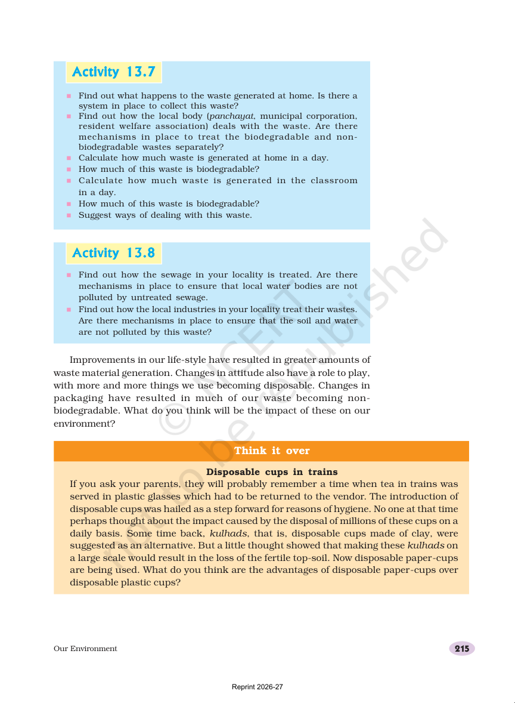
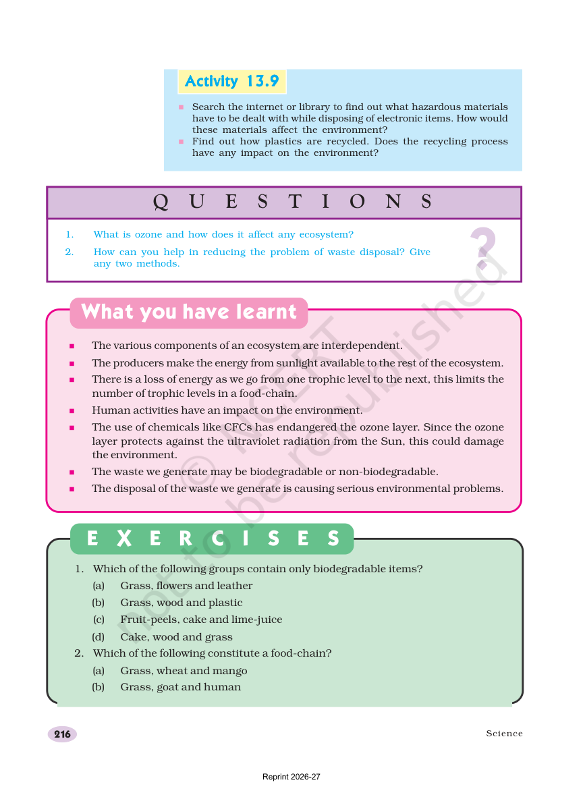
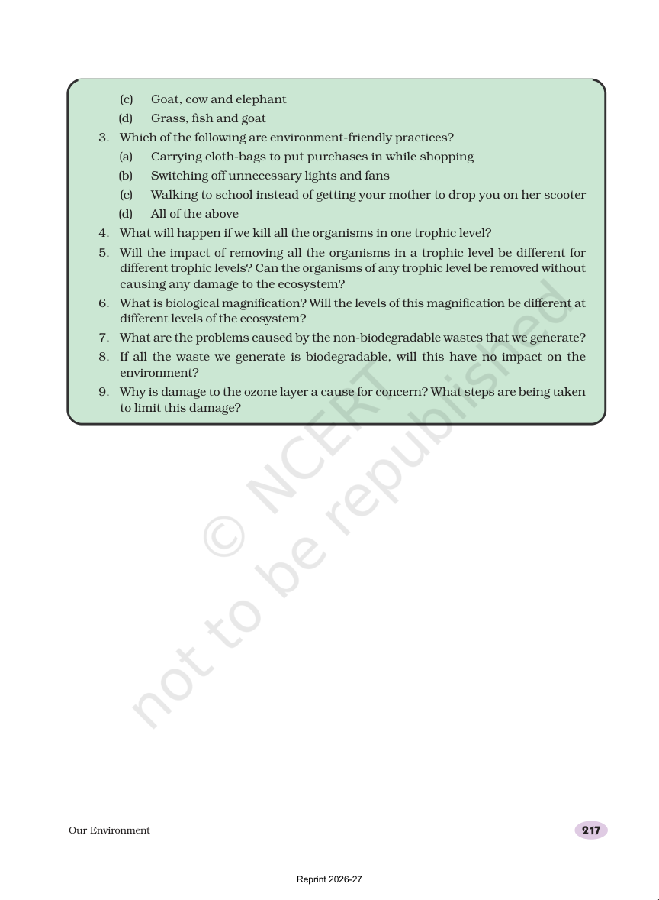

Nature works as a connected system
Living things and non-living parts work together in every ecosystem.
Key ideas
- Biotic means living.
- Abiotic means non-living.
- A garden, pond, forest, or aquarium can all be ecosystems.
Page previews


Ecosystems are living neighborhoods
An ecosystem is a place where organisms and surroundings affect each other.
Key ideas
- An aquarium is a human-made ecosystem.
- Producers, consumers, and decomposers all matter.
- Food and shelter link the organisms together.
Page previews

Food chains and food webs
Energy moves through feeding links. A food web is a connected set of many food chains.
Key ideas
- A food chain shows who eats whom.
- A food web is more realistic than one straight line.
- Trophic levels name each step in the chain.
Page previews


Energy flow
Sunlight enters through plants, and only part of the energy moves on at each step.
Key ideas
- Plants capture only a small part of sunlight.
- About 10% of food energy moves to the next level.
- The lowest trophic level usually has the most organisms.
Page previews


Waste, ozone, and better habits
The chapter ends with practical care: reduce waste, protect the ozone layer, and choose cleaner habits.
Key ideas
- Biodegradable waste breaks down naturally.
- Non-biodegradable waste can build up and cause trouble.
- Cloth bags and turning off unused lights are helpful habits.
Page previews



Quick self-check
These questions are saved in this browser. Pick an answer, see the feedback, and use Try again to reset everything.
Ecosystems
Living and non-living parts interact in one place.
Food chains and webs
Food moves through linked eating relationships.
Energy flow
Energy enters from the Sun and moves step by step.
Clean habits
Waste, ozone, and better choices for nature.